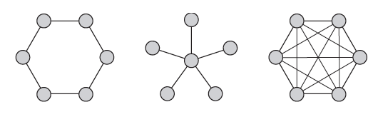

1) Implemente um programa que, dado um conjunto C de n inteiros e outro inteiro I, determinar os pares de inteiros de C cuja subtração é exatamente igual a I. Em seguida, analise a complexidade do algoritmo proposto. O seu programa deve basear-se na estratégia de força bruta.
2) Uma topologia de rede de computadores, impressoras e outros dispositivos são conectados através de uma rede. A Figura abaixo ilustra três topologias comuns de redes: anel, estrela e malha totalmente conectada.
Você recebe uma matriz booleana A [0..n - 1, 0..n - 1], onde n> 3, que deverá ser a matriz de adjacência de um grafo que representa uma rede com uma dessas topologias. Sua tarefa é determinar qual dessas três topologias, se houver, a matriz representa. O programa de retornar mensagem “Outra topologia” para matrizes que não apresentam nenhum dos três tipos. Implemente um programa baseado em força bruta para esta tarefa e indique sua classe de eficiência de tempo.